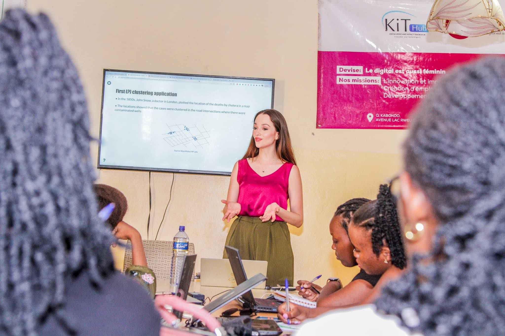
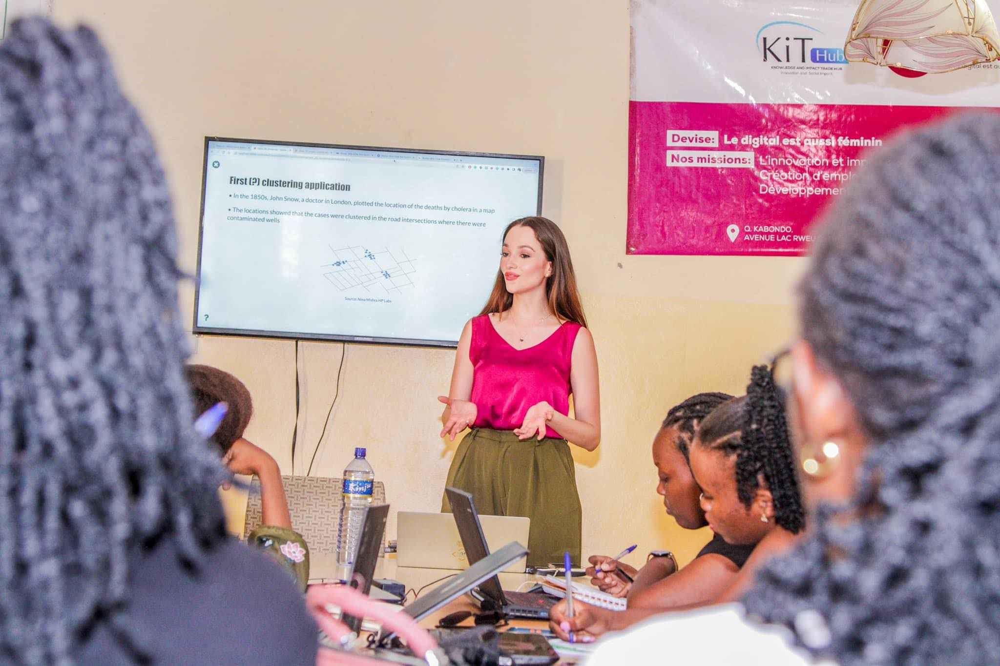

✨ About Me
I'm a multifaceted professional with a fervor for artificial intelligence, education, and empowerment. With over 10 years of coding experience, I've navigated through various sectors, leveraging data science to drive innovation in advertising, marketing, retail, and cybersecurity.
As an educator, I've had the honor of guiding over 3,000 students across the globe in mastering AI and data skills. My passion for knowledge-sharing stems from a simple yet profound belief: understanding technology in the modern age is as essential as literacy in times gone by.
I'm a multifaceted professional with a fervor for artificial intelligence, education, and empowerment. With over 10 years of coding experience, I've navigated through various sectors, leveraging data science to drive innovation in advertising, marketing, retail, and cybersecurity.
As an educator, I've had the honor of guiding over 3,000 students across the globe in mastering AI and data skills. My passion for knowledge-sharing stems from a simple yet profound belief: understanding technology in the modern age is as essential as literacy in times gone by.
Check out my resume
.
🚀 Miss Factorial Academy
 As the proud founder of Miss Factorial Academy, I am deeply passionate about transforming AI and data education into an engaging journey. In a world where data fluency has become as indispensable as literacy, my goal is to unlock the power of science and technology for all, transcending profession, socioeconomic status, cultural background, or educational level. Guided by the belief that learning should be as exciting as the most captivating episodes of your favorite series, I steer Miss Factorial Academy towards a future where every lesson is an adventure, every concept a discovery, and every student a story of success waiting to unfold.
 As the proud founder of Miss Factorial Academy, I am deeply passionate about transforming AI and data education into an engaging journey. In a world where data fluency has become as indispensable as literacy, my goal is to unlock the power of science and technology for all, transcending profession, socioeconomic status, cultural background, or educational level. Guided by the belief that learning should be as exciting as the most captivating episodes of your favorite series, I steer Miss Factorial Academy towards a future where every lesson is an adventure, every concept a discovery, and every student a story of success waiting to unfold.
Learn more at: missfactorial.com
🎤 TV/Radio Host
 Outside the tech realm, I've embraced the spotlight as Miss Sucre, making it to the top 13 at the Miss Universe Colombia 2021 competition. During this journey, I utilized the contest platform to advocate for the importance of women in STEM fields, aiming to inspire young girls and women to pursue their passion in science, technology, engineering, and mathematics.
Outside the tech realm, I've embraced the spotlight as Miss Sucre, making it to the top 13 at the Miss Universe Colombia 2021 competition. During this journey, I utilized the contest platform to advocate for the importance of women in STEM fields, aiming to inspire young girls and women to pursue their passion in science, technology, engineering, and mathematics.
I've also engaged in science/tech outreach as a Radio and TV host across multiple countries, starting in 2010 and continuing on a seasonal basis. My role has allowed me to break down complex concepts into accessible information, presented in a friendly and captivating way, with the aim of cultivating a culture that values STEM literacy.
Outside the tech realm, I've embraced the spotlight as Miss Sucre, making it to the top 13 at the Miss Universe Colombia 2021 competition. During this journey, I utilized the contest platform to advocate for the importance of women in STEM fields, aiming to inspire young girls and women to pursue their passion in science, technology, engineering, and mathematics.
I've also engaged in science/tech outreach as a Radio and TV host across multiple countries, starting in 2010 and continuing on a seasonal basis. My role has allowed me to break down complex concepts into accessible information, presented in a friendly and captivating way, with the aim of cultivating a culture that values STEM literacy.